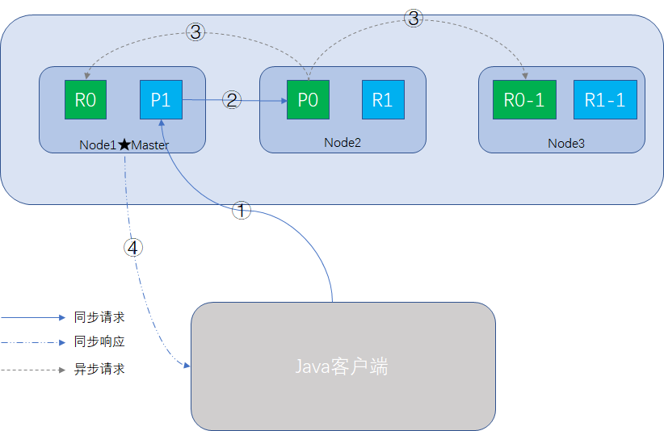
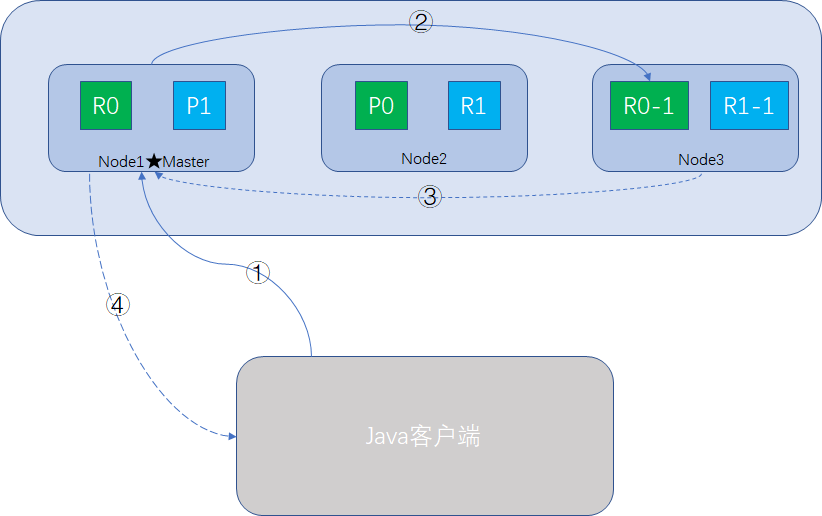

原文连接:https://www.cnblogs.com/huangying2124/p/12065697.html
概要
bulk api有趣的json格式
前面《简单入门实战》一节中，有介绍bulk的使用示例，大家一定很奇怪，还有这么有趣的JSON格式，必须严格照他的换行来做，我想把JSON搞得美观可读性好一点，居然给我报错！
{"action": {"meta"}}\n
{"data"}\n
{"action": {"meta"}}\n
{"data"}\n它为什么要这样规定？
我们想想bulk设计的初衷，批处理的执行效率肯定是第一优先级，此时效率>可读性，如果我们允许随意换行，用标准格式的JSON串，会有什么区别？
如果是标准格式的JSON串，处理流程一般会是这样：
- 将整个json数组全部加载，解析为JSONArray对象，这时内存中同时有json串文本和JSONArray对象。
- 循环遍历JSONArray对象，获取每个请求中的document进行路由信息。
- 把路由到同一个shard的请求合在一组，开辟一个新的请求数组，将JSONObject放在数组里。
- 序列化请求数组，发送到对应的节点上去。
- 收集各节点的响应，汇总后返回给Coordinate Node。
- Coordinate Node收到所有的汇总信息，返回给客户端。
这种方式唯一的缺点就是占用内存多，一份json串，解析为JSONArray对象，内存占用翻番，bulk里面多则几千条请求，如果JSON报文大一点，这内存耗费不是开玩笑的，如果bulk占用的内存过多，就可能会挤压其他请求的内存使用量，如搜索请求、数据分析请求等，整体性能会急速下降，严重的情况可能会触发Full GC，会导致整个JVM工作线程暂停。
再看看现有的格式定义：除了delete操作占一行，其他操作都是占两行的，ES收到bulk请求时，就可以简单的按行进行切割，也不用转成json对象了，切割完的JSON读取里面的meta信息，直接路由到相应的shard，收集完响应返回即可。
这样的好处切割逻辑更简单，都是处理小json字符串，内存快拿快放，整个ES避免对内存的大块占用，尽可能保证性能。
增删改文档内部原理
增删改的过程整体与查询文档过程一致，只是多了一个数据同步的步骤，整个过程如图所示：

相似的步骤不赘述。
步骤3的前提是primary shard操作成功，异步请求，所有的replica都返回成功后，node2响应操作成功的消息给Coordinate Node，最后Coordinate Node向客户端返回成功消息，此时所有的primary shard和replica shard均已完成数据同步，数据是一致的。
查询文档内部原理
当我们使用客户端（Java或Restful API）向Elasticsearch搜索文档数据时，可以向任意一个node发送请求，此时接受请求的node就是Coordinate Node，整个过程如图所示：

- Coordinate Node接收到请求后，根据_id信息或routing信息，确定该document的路由信息，即在哪个shard里，比如说P0。
- Coordinate Node转发请求，使用round-robin随机轮询算法 ，在primary shard或replica shard随机挑一个，让读请求负载均衡，如node-3的R0-1
- 接收请求的node-3搜索完成后，响应结果给Coordinate Node。
- Coordinate Node将响应结果返回给客户端。
注意一个问题，如果document还在建立索引过程中，可能只有primary shard有，任何一个replica shard都没有，此时可能会无法读取到document，但是等document完成索引建立后，primary shard和replica shard就都有了，这个时间间隔，大概1秒左右。
写一致性要求
Elasticsearch在尝试执行一个写操作时，可以带上consistency参数，声明我们的写一致性的级别，正确地使用这个级别，为了避免因分区故障执行写操作，导致数据不一致，这个参数有三个值供选择：
- one：只要有一个primary shard是active活跃可用的，就可以执行写操作
- all：必须所有的primary shard和replica shard都是活跃的，才可以执行这个写操作
- quorum：默认的值，要求所有的shard中，必须是大部分的shard都是活跃的，可用的，才可以执行这个写操作
这个大部分，该怎么算呢？
这个大部分，叫规定数量(quorum)，有个计算公式：
int( (primary + number_of_replicas) / 2 ) + 1
- primary 即一个索引下的primary shard数量；
- number_of_replicas即每个primary shard拥有的副本数量，注意不是一个索引所有的副本数量。
如果一个索引有3个primary shard，每个shard拥有1个replica shard，共6个shard，这样number_of_replicas就是1，代入公式计算：
quorum = int ((3 + 1) / 2) + 1 = 3
所以6个shard中必须有3个是活跃的，才让你写，如果你只启用2个node，这样活跃的replica shard只会有1个，加上primarys shard ，结果最多是2。这样是达不到quorun的值，因此将无法索引和删除任何文档。
此时你必须启动3个节点，才能满足quorum写一致性的要求。
quorum不够时的超时处理
如果写操作检查前，活跃的shard不够导致无法写入时，Elasticsearch会等待，希望宕机的node能够恢复，默认60秒，可以使用timeout参数修改默认值。
单node的写一致性
照上面的公式算，1个node的，1个索引1个primary shard，number_of_replicas为1的情况，计算公式：
quorum = int ((1 + 1) / 2) + 1 = 2
实际只有一个primary shard是活跃的，岂不是永远无法写入？我研发机器只启动一个node，不照样增删改查？
原来是Elasticsearch为了避免单一node的无法写入问题，加了判断逻辑：只有number_of_replicas大于1的时候，quorum才会生效。
小结
本篇从性能优先的角度简单对bulk的设计作了一些补充，并对文档查询，写操作的原理过程，一致性级别，quorum的计算做了一些简单讲解，谢谢。
专注Java高并发、分布式架构，更多技术干货分享与心得，请关注公众号：Java架构社区